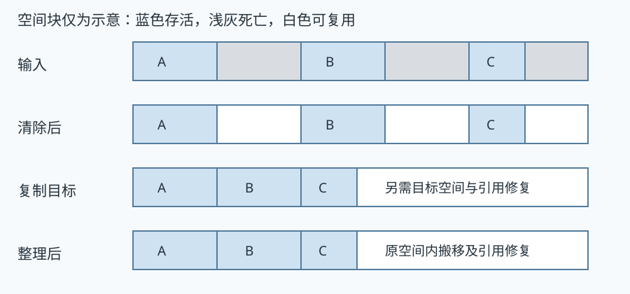

第五篇 · 垃圾收集与运行时协作
第19章 垃圾收集的理论基础
怎样判断对象是否仍须保留，又怎样以可接受的成本恢复分配空间？从引用关系开始，把暂停、并发工作和容量放进同一本账。
本章基于 Java 开发工具包（Java Development Kit，JDK）25.0.5.0.2 与 HotSpot；垃圾收集（Garbage Collection，GC）的实现结论定位到固定 OpenJDK 提交，语言与类库语义单独注明。容量单位采用兆二进制字节（mebibyte，MiB）和千二进制字节（kibibyte，KiB）。前置为对象、分配和执行引擎；源码阅读、运行说明与证据索引相互对应。
19.1 目标、成本与指标
19.1.1 先把五个量分开
分配速率是单位时间新产生的对象字节；存活集是一次追踪后仍须保留的对象；回收速率是空间重新可供分配的速度；暂停是应用执行被协调停止的时间；内存占用还包含空闲预留、元数据和收集器结构。程序频繁分配短命数组，可以有很高的分配量而只有很小的存活集。反过来，几乎不分配的静态集合也可能长期保有大堆。
比较时先定窗口：同一阶段的“累计分配”不能与一个时间点的“堆已用”直接相减。回收日志的前后占用包含期间并发分配和代际移动，不能一律解释为已死亡对象的精确大小。第9章的进程账本仍适用：堆回落不推出驻留内存立即回落。
19.1.2 应用工作、回收工作与余量
在单处理器串行简化模型中，应用占比可写成应用时间除以应用时间与收集时间之和；并发收集时，两类工作在墙钟时间上重叠，不能再把所有线程的工作时间直接相加作分母。它们仍争用处理器、缓存与内存带宽，还需要对象移动和标记元数据的空间。
若回收完成前可用空间先被分配消耗，短暂停也救不了分配等待。一个容量推理起点是：余量至少覆盖该段时间的净分配需求与转移预留；实际需容纳突发、存活变化和进度波动。这是预算关系，不是把某个固定堆倍数当成保证。
19.2 可达性与根扫描
19.2.1 根是进入对象图的入口
根包括存活线程的栈中引用、运行时句柄、活跃类及加载器关联的持有关系、本地强句柄等。静态字段可以通过活跃类的镜像关系成为持有链的一部分；不是所有“曾经加载”的类永远作为根保留。第8章的加载器可卸载性决定整组元数据和镜像是否仍须保留。
对象间相互引用只形成环；若根到环没有强路径，追踪式收集仍可回收它们。反过来，一个已经不再有业务用途的缓存，只要有根路径就继续存活。因此“有用”在算法中落实为可达性，不是收集器理解业务意图。

19.2.2 精确引用信息来自执行引擎
精确收集不能把栈里每个长得像地址的整数都改写为引用。解释帧按当前字节码状态识别局部变量和表达式栈，编译帧使用引用位置映射（OopMap）定位寄存器和栈槽；本地代码经句柄间接持有对象。移动后必须更新这些位置，或由屏障协议把旧引用解析到新位置。
第18章记录的优化状态说明：源码变量未必一直占一个实际槽位，已消除的对象也未必存在于堆中。可达性以继续执行所需的真实语义状态为边界，不能把源码作用域末尾当成精确死亡时刻。Reference.reachabilityFence在必要位置延长可达性，但不替代线程同步或资源关闭。
19.3 基本算法与分代
19.3.1 三种基本空间转换
标记清除先追踪存活，再将死块放回可用结构；不搬动存活对象，可能留下碎片。复制把存活对象移到另一块区域，扫描成本偏向存活量，但需要目标空间并修复引用。标记整理在标记后计算或协作确定新位置，将存活对象集中，换取连续可分配空间；移动、遍历与引用更新都不是免费操作。
这三类只是原理分解，真实收集器会组合使用。例如年轻代以转移处理为主，而失败后的完整堆路径可能整理。空间图中的空格仅代表可复用单元，真实对象大小、对齐和转移预留依实现决定。

19.3.2 代际角色与跨代引用
分代假说是许多负载中多数对象较快死亡、幸存越久的对象平均更可能继续存活的经验规律。年轻代聚焦新分配对象，降低每次遍历范围；对象年龄与晋升把长期幸存者送到老年代。年龄不是对象的墙钟寿命，晋升也可能受幸存区容量而提前发生。
只扫描年轻代前必须补齐老到年轻的引用入口；卡表与记忆集记录这些关系，第20章解释维护协议。代是角色，区域是物理划分：Garbage-First（G1）可在相同大小的区域间改变代际角色，不能把所有分代收集器画成两块固定连续内存。
19.4 并行、并发与权衡
19.4.1 两个维度可同时出现
并行描述多个回收工作线程协同扫描、复制或整理；并发描述回收与应用在时间上重叠。Serial的主要堆收集工作是暂停内单工作线程，Parallel是暂停内多个工作线程；G1、Z Garbage Collector（ZGC）和Shenandoah则在不同阶段组合暂停、并行与并发。名称不能替代逐阶段判断。
暂停使对象图在所需范围稳定；并发则要记录应用修改，并在阶段转换时建立一致边界。图20-1给出暂停请求到恢复的时序。因此并发移动并非“不要暂停”，而是把大量工作搬到并发执行，借助屏障与短暂停保持访问正确。
19.4.2 吞吐、尾延迟与空间共同预算
增加工作线程可能缩短某段暂停，却占用应用原可使用的计算资源；小堆可能减少一次扫描量，却使收集更频繁并压缩并发余量。低暂停收集器的访问屏障、转发表和并发工作成本，可能在应用吞吐与空间上体现。
本篇后续统一记录负载、存活关系、堆预算、线程预算和日志设置；本轮仅做机制观察，不以短教学进程给出性能排名。业务尾延迟还包含调度、锁等待与分配停顿，第36章才在实际负载条件下进行综合分析。
19.5 特殊引用与清理
19.5.1 强、软、弱、虚引用及队列
强引用沿普通持有链使对象存活。软引用允许内存敏感的保留策略，但没有稳定的缓存淘汰时刻。弱引用不阻止仅弱可达对象被处理；虚引用用于对象达到相应生命周期状态后的通知，PhantomReference.get()始终返回空，不能取回目标。不同引用类型的清除和入队按类库契约处理，不能把某次队列顺序当成全局时序保证。
队列放入的是引用对象，不是被指向的业务对象；队列也不会保活尚未入队的所有登记引用。示例始终保留弱／虚引用包装器，用refersTo(null)观察清除，避免临时调用get()又把目标强持有。
19.5.2 显式关闭负责及时性
终结机制已弃用并计划移除，不应为新代码重写finalize。Cleaner基于虚可达登记动作，动作不得捕获被清理对象；否则形成强持有环，使自动清理难以触发。动作可能被显式调用，也可能由后台处理执行，至多执行一次的契约不等于及时执行保证。
文件、连接和外部内存由拥有者使用显式关闭及作用域管理；清理机制只用于补救。教学例仅登记真实动作并显式clean()，没有外部资源，不将“动作已运行”冒充“系统资源释放已测量”。程序终止前未执行自动清理也不违反及时关闭责任。

观察与解释边界
CH19-E01在64兆二进制字节（mebibyte，MiB）最大堆、Serial收集器中运行。第一次请求时静态强引用仍在，弱引用未清除；释放后第二次请求，在两次1500毫秒窗口内依次收到WeakReference与PhantomReference，随后观察到弱引用清除、虚引用get为空。两个回收都记录为显式请求的完整收集。显式清理动作执行，程序退出0。
先前一次命令因终端未引用通配字符而在启动前被拒绝，补上引号后才生成本次进程记录。通知顺序和完成时点只描述本次运行，不由教学程序作断言。
本轮收到两类通知，不证明请求即完成、软引用淘汰时点、终结时点或资源归还系统；没有外部资源、耗尽和性能结论。
来源与回顾
- CH19-S01 Java平台标准版（Java Platform, Standard Edition，Java SE）25引用类库契约：java.lang.ref；可达级别、清除及队列持有责任。
- CH19-S02 固定实现：ReferenceProcessor::process_discovered_references；引用处理与保活阶段。
- CH19-S03 固定类库实现：Cleaner.register / Cleanable.clean；动作独立、至多一次与显式调用。
- CH19-S04 固定执行引擎：OopMap / OopMapSet；精确引用位置及移动修复入口。
- CH19-S05 Reference与显式回收契约：reachabilityFence / refersTo；保活与观察避免引入临时强持有。
源码固定提交：1775ea114f649f0314e4e43eb6c802ff16dfab7c。实现定位和完整命令见证据索引及运行记录；插图表达机制，没有填入推测的时间或地址。
回顾：先确定哪些引用或状态必须保留，再看工作在哪里执行、消耗哪些资源。思考：若删除静态强持有但保留对象环，为什么仍可回收？若清理动作捕获拥有者，为什么可能一直不执行？复制与整理分别把成本转移到哪里？